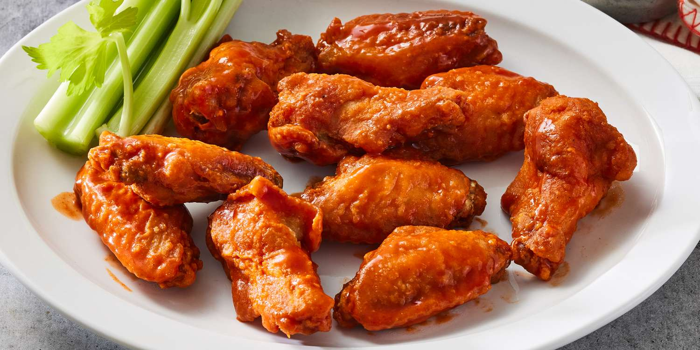

Air fryer chicken wings

Description
Crispy chicken wings in half an hour with minimal mess.
Ingredients
- 1 kg chicken wings
- 1/4 cup starch (corn, tapioca, potato... all work fine)
- 2 teaspoons salt
- 1 teaspoon onion powder
- fresh ground black pepper to taste
- Hot sauce or Korean wing sauce
Directions
- Remove chicken wings from package, if they are very wet drain til only moist.
- Scatter starch and seasonings over the wings and stir or shake to distribute well.
- Place on parchment in a preheated 400F air fryer and bake for 13 minutes.
- Turn wings over at 13 minutes and bake for another 10 minutes.
- Wings will be crispy but not necessarily brown. At this point, add hot sauce or wing sauce, mix well to coat, and serve hot.
Home